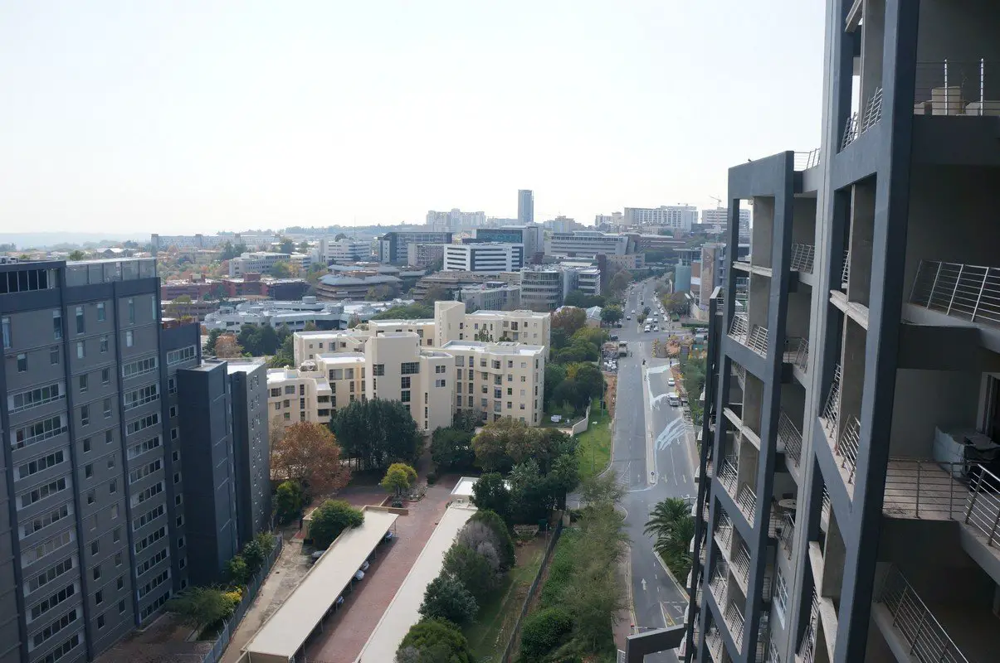

Johannesburg is an attractive expat option because of its good work/life balance. It's a green city, with plenty of open spaces. There is a strong local love of sport, with rugby and cricket high on the agenda. Watching a match is a great way to get involved in the community, as well as seeing some world-quality games. With such a wonderfully mild climate, there is a lot of sunshine but no oppressive heat, so weekends and downtime can be spent exploring outside.
Expect to see some of the worst income disparity in the world, something that was very hard for me to get used to. It's normal life for folks here but it will be shocking at first. Apartheid has left its mark on the country and even though it ended over 20 years ago, its impact will continue on for many more generations.
Nevertheless, there is a real mix of cultures in the city, with many different languages to be heard around the streets. While the official language is English, people will regularly converse in their mother tongues of Sotho, Zulu, Tswana, Afrikaans and more. People here are very friendly and you can always expect to see smiles. I was pretty surprised at how friendly everyone was but became pleasantly used to it in short time. People here like to have a good time, so if you are keen as well, you will have a good time!
Johannesburg has a bad, if not the worst, reputation for crime. It is consistently ranked as one of the most dangerous places in the world. You regularly hear about people getting carjacked, robbed, break and enter etc. This is also why gated communities are the norm and not the exception
people to be incredibly friendly in South Africa. Black, White, Indian, whatever it was, People are very hospitable here. People should visit sweto, and can make best memories and parties in the townships. While most people might think it dangerous, it is totally untrue.
Looking for an apartment in Johannesburg can be a daunting task. It's not like New york or Hong Kong with their astronomical prices, but it can be hectic as well.
There are many furnished apartment rentals in Johannesburg as there are many people here on short term assignment. I didn't want the hassle of buying furniture (plus they don't have Ikea here), so I searched only for furnished rentals. They are slightly more expensive of course, but not by much. There are an abundance of apartment complexes, buildings, townhouses, etc. for rent in the Sandton and surrounding areas. A one month security deposit is standard with the main ancillary fees to be paid being electricity.
There's just so much good food in this country to explore. Whether it's top quality steaks, fresh seafood, biltong (my absolute favorite), Nandos, Cape Malay food, and a host of different International cuisines, I loved it all.
Food and wine at restaurants are quite affordable. Steaks, especially are incredibly delicious and cheap in comparison to how much people earn. Make sure to also check out the local food markets in Johannesburg like Neighbourgoods Market on Saturdays, and Market on Main on Sundays for a guaranteed good time.
Tipping is standard in South Africa with 10% being the norm. Since everyone uses credit card, you can just add 10% to your bill and tell the waiter the total amount to charge your card.
The main grocery store chains in Johannesburg are Pick N Pay, Shoprite, Checkers, Spar, and Woolworths. Woolworth's is the more upscale one if I had to choose. As I prefer eating out, I'm not a good authority on what's what in the grocery store scene. They have all you need to live any lifestyle you want.
Wines and meats are generally cheaper here than other countries in the World
The gym culture is strong in South Africa. People like to stay fit and whether that's because of the warm weather or the people wanting to impress others, there are plenty of gym options to go around in Johannesburg.
The two biggest gym chains are Planet Fitness (not the one from the US), and Virgin Active. Each chain has multiple locations throughout the city. The high end gyms and the nicest clubs are Virgin Active Alice Lane, and Planet Fitness Platinum. Expect to pay about R2,000 a month for Virgin Active Alice Lane, and slightly less for Planet Fitness Platinum. Note that there’s a good chance your health insurance will provide discounts through Momentum or Discovery.
Johannesburg is not an expensive place to live, but not really cheap either. It is the financial capital of Africa and should be viewed as such. If you want to live in the CBD near Sandton, you can expect to pay very high rents compared to living 30 minutes outside of town.
Food and alcohol are generally very cheap in South Africa in comparison to other major cities. I loved being able to have delicious food and wine at a price that didn't make me hurt inside.